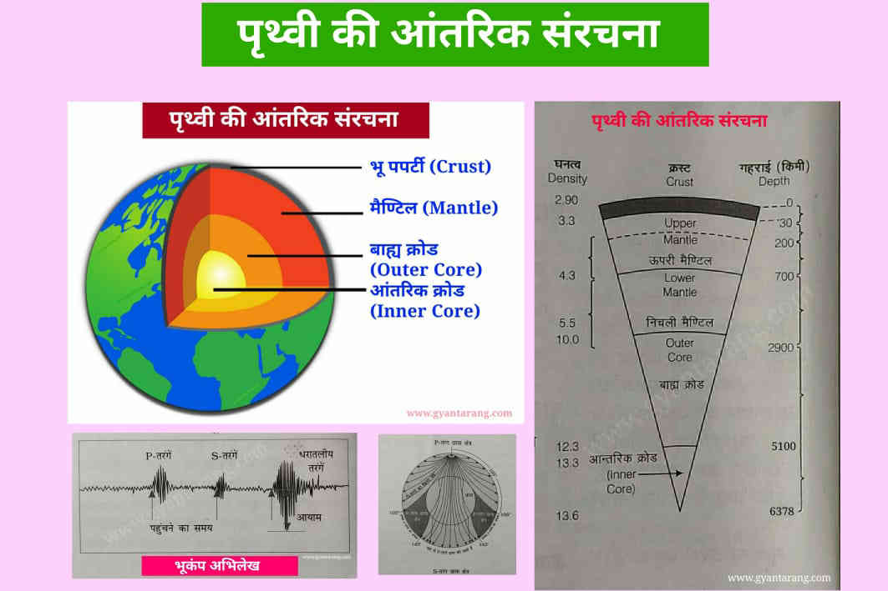

पृथ्वी की आतंरिक संरचना शल्कीय (अर्थात परतों के रूप में) है, जैसे प्याज के छिलके परतों के रूप में होते हैं। इन परतों की मोटाई का सीमांकन रासायनिक अथवा यांत्रिक विशेषताओं के आधार पर किया जा सकता है।
भूपर्पटी (Crust): पृथ्वी की सबसे ऊपरी परत है जो एक ठोस परत के रूप में होती है।
मैंटल (Mantle): यह मध्यवर्ती परत है और अत्यधिक गाढ़ी (dense) होती है।
बाह्य क्रोड (Outer Core): यह तरल अवस्था में होता है।
आंतरिक क्रोड (Inner Core): यह ठोस अवस्था में होता है।
| क्रम | प्रश्न | उत्तर |
|---|---|---|
| 1️⃣ | पृथ्वी की आंतरिक संरचना किस प्रकार की होती है? | शल्कीय संरचना, जैसे प्याज के छिलके। |
| 2️⃣ | पृथ्वी की सबसे ऊपरी परत कौन-सी है? | भूपर्पटी (Crust) |
| 3️⃣ | पृथ्वी की सबसे मोटी परत कौन-सी है? | मैंटल (Mantle) |
| 4️⃣ | कोर कितने प्रकार की होती है? | दो: बाह्य कोर (Outer Core) – तरल, आंतरिक कोर (Inner Core) – ठोस |
| 5️⃣ | पृथ्वी का चुंबकीय क्षेत्र किस परत से उत्पन्न होता है? | बाह्य कोर (Outer Core) |
| 6️⃣ | मेंटल की मोटाई कितनी होती है? | लगभग 2,900 किलोमीटर |
| 7️⃣ | क्रस्ट मुख्य रूप से किन तत्वों से बना होता है? | सिलिका (Si) और एल्युमिनियम (Al) |
| 8️⃣ | मैंटल किन तत्वों से बना होता है? | सिलिका (Si) और मैग्नीशियम (Mg) |
| 9️⃣ | कोर किन तत्वों से बना होता है? | लोहा (Fe) और निकेल (Ni) |
| 🔟 | पृथ्वी की सबसे घनी परत कौन सी है? | आंतरिक कोर (Inner Core) |
| पृथ्वी की आंतरिक ऊर्जा का स्रोत क्या है? | – मेंटल और कोर की गर्मी |
| भूकंपीय तरंगें पृथ्वी की किन परतों से गुजरती हैं? | – क्रस्ट, मेंटल और कोर |
| S तरंगें किस परत से नहीं गुजरती हैं? | – तरल बाह्य कोर से |
| लिथोस्फीयर किन परतों से मिलकर बना है? | – भूपर्पटी और ऊपरी मेंटल का कठोर भाग |